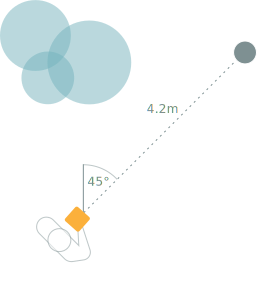
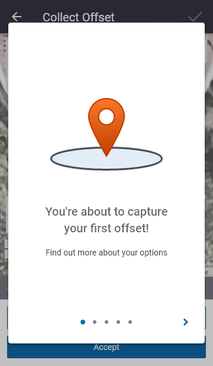

<!DOCTYPE html><html class="no-js" lang="en"><head>
    <meta charset="utf-8">
    <title>Trimble Offset Workflow | Portfolio | Senior digital product &amp; interaction designer, UX/UI, and front-end developer</title>
    <meta name="description" content="Bringing ease of use to the Trimble Geospatial Division">
    <meta name="viewport" content="width=device-width, initial-scale=1">
    <link rel="preconnect" href="https://fonts.gstatic.com">
<link href="https://fonts.googleapis.com/css2?family=Lora:ital,wght@1,400;1,700&amp;family=Mulish:wght@300;400;600&amp;display=swap" rel="stylesheet">

<link rel="stylesheet" href="../css/main.css">
	<link type="text/css" rel="stylesheet" href="../css/portfolio.css">

</head>
<body>
<div id="main" class="portfolio-item-page-wrapper trimble">
    
<header id="main-header">
	<div class="content">
		<a href="../" class="logo-inline">Sara Coutinho</a>
		<nav class="nav-main" id="main-menu">
			<ul>
				<li class="about">
					<a href="../about">
						<span class="title">About me</span>
						<span class="caption">A brief intro</span>
					</a>
				</li>
				<li class="skills">
					<a href="../what-i-do">
						<span class="title">What I do</span>
						<span class="caption">Process &amp; Skills</span>
					</a>
				</li>
				<li class="portfolio portfolio-page">
					<a href="\portfolio\" class="selected">
						<span class="title">Work</span>
						<span class="caption">Portfolio</span>
					</a>
                    <ul class="sub-menu">
                        <li>
                            <a href="kiwiviz">KiwiViz</a>
                        </li>
                        <li>
                            <a href="cacophony">Cacophony</a>
                        </li>
                        <li>
                            <a href="ws">WhereScape</a>
                        </li>
                        <li>
                            <a href="trimble" class="selected">Trimble</a>
                        </li>
                        <li>
                            <a href="tvn">TVN</a>
                        </li>
                        <li>
                            <a href="bird-counter">Bird Counter</a>
                        </li>
                    </ul>
				</li>
				<li class="scrapbook">
					<a href="http://scrapbook.saracoutinho.co.nz" target="_blank" rel="nofollow">
						<span class="title">Scrapbook</span>
						<span class="caption">The inspiration stream</span>
					</a>
				</li>
				<li class="contact">
					<a href="../contact">
						<span class="title">Contact</span>
						<span class="caption">Say hi</span>
					</a>
				</li>
			</ul>
			<button class="trigger" id="menu-hide">Close</button>
		</nav>
		<button class="trigger" id="menu-show">Menu</button>
	</div>
</header>    <div class="project">
        <article>
            <nav class="project-nav" id="project-nav">
                <ul>
                    <li>
                        <a href="#introduction">Introduction</a>
                    </li>
                    <li>
                        <a href="#background">Background</a>
                    </li>
                    <li>
                        <a href="#challenge">Challenge</a>
                    </li>
                    <li>
                        <a href="#process">Process</a>
                    </li>
                    <li>
                        <a href="#solution">Solution</a>
                    </li>
                    <li>
                        <a href="#results">Results</a>
                    </li>
                </ul>
            </nav>
            <header class="project-intro" id="introduction">
                <div class="logo">
                    
                </div>
                <h1>Bringing ease of use to the<br> Trimble Geospatial Division</h1>
                <p class="lead">The geospatial division of Trimble makes hardware and software that allows people around the world to collect geospatial information with a high level of accuracy. I worked on a new piece of functionality that was extremely well received and generated sales even before the official release. </p>


                <div class="media-wrapper">

                    <div class="rangefinder">
                        
                    </div>
                    <div class="trimble-phone">
                        
                    </div>
                </div>

                <div class="info">
                    <dl>
                        <dt>Client</dt>
                        <dd>Trimble Geospatial division</dd>

                    </dl>
                    <dl>
                        <dt>Role</dt>
                        <dd>UX/UI design</dd>
                        <dd></dd>

                    </dl>

                    <dl>
                        <dt>Date</dt>
                        <dd>2019-2020</dd>
                    </dl>

                </div>
            </header>

            <div class="project-content">


                <h2 id="background">Background</h2>
                <p>Trimble is a long-established and well respected company in the geospatial and surveying spaces. Their hardware and software is used by people all over the world to collect location data about the world that surrounds them.</p>

            </div>

            <div class="project-content ptl">

                <h2 id="challenge">Challenge</h2>

                <p>The team at Trimble was in the process replacing a legacy twenty year old solution that relied on custom hardware and software.
The new version supports modern mobile devices and tablets, paired with a multitude of hardware configurations.</p>
<p>I was enlisted to design a major feature: allowing field workers to capture physical features they are not able to get close to using a laser rangefinder.</p>

            </div>


            <div class="project-content light">

                <h6>Some of the different hardware configurations available</h6>
                <div class="three-cols">
                    <div class="col">
                        <figure>
                            
                            <figcaption class="description">Custom handheld device (right) and laser rangefinder (left).</figcaption>
                        </figure>
                    </div>
                    <div class="col">
                        <figure>
                            
                            <figcaption class="description">Custom device or mobile phone and laser rangefinder, both mounted on a pole.</figcaption>
                        </figure>

                    </div>
                    <div class="col">
                        <figure>
                            
                            <figcaption class="description">Android or iPhone running Trimble software plus laser rangefinder.</figcaption>
                        </figure>
                    </div>
                </div>

            </div>


            <div class="feature-bg-img">
            </div>


            <div class="project-content">

                <h2 id="process">Process</h2>
                <p>I worked with product owners and managers to understand the previous implementation of laser rangefinder support. During the process we realised that we were no longer constrained by the technical limitations of 20 years ago (e.g having to use a stylus) and that this opened the opportunity to do things differently. As the discovery phase progressed, I discussed my findings and assumptions with the development team to understand the technical feasibility of  proposed solutions and to be aware of any potential limitations. </p>

            </div>


            <div class="project-content ptl">

                <div class="two-cols-thirds">
                    <div class="col">

                        <h3>Understanding the users</h3>

                        <p>During the discovery process three main findings emerged:</p>

                        <ul>
                            <li>Field work is hazardous work. In some cases users are unable to get physically close to the features they have to capture  because of a physical barrier or a dangerous animal. Instead, field workers can make use of a laser rangefinder and use triangulation to capture the location of a feature.</li>
                            <li>Field workers are not technical staff and don't have (nor need to have) a deep understanding of the technicalities of GIS.</li>
                            <li>Depending on the setup, users might not be hands free or have their movement constrained by the gear they are carrying.</li>
                        </ul>

                        <p>These generated the following insights:</p>

                        <ul>
                            <li>Any proposed solution had to be self-explanatory.</li>
                            <li>Efficiency is important for field work users. If they have no hands free we should minimise interactions with the UI.</li>
                        </ul>

                    </div>

                    <div class="col">
                        <figure>
                            <figcaption class="description">Field worker carrying Trimble gear.</figcaption>
                            
                            <figcaption class="description">Image by <a href="https://commons.wikimedia.org/wiki/File:Vermessung_mit_Trimble_GPS_System_in_Sofia_2012_PD_3.jpg">Bin im Garten</a>, some rights reserved <a href="https://creativecommons.org/licenses/by-sa/3.0/deed.en">CC BY-SA 3.0</a>.</figcaption>
                        </figure>
                    </div>
                </div>

            </div>


            <div class="project-content ptl">

                <h3>Different gear, different use cases</h3>
                <p>Laser rangefinders use different methods for data collection, and this has implications for a user workflow. Some models capture the distance to the target and the compass direction of the target; others capture only the distance, often requiring two measurements to get an accurate result.</p>

            </div>

            <div class="project-content light">

                <h6>The two main types of laser rangefinders</h6>
                <div class="two-cols">
                    <div class="col center">
                        <figure>
                            
                            <figcaption class="description">Workflow using laser rangefinder that supports both distance and bearing (offset in degrees from the north) measurements.</figcaption>
                        </figure>
                    </div>
                    <div class="col center">
                        <figure>
                            
                            <figcaption class="description">Workflow using a laser rangefinder that only supports distance measurements. Two steps may be required to get accurate measurements.</figcaption>
                        </figure>
                    </div>
                </div>

            </div>

            <div class="project-content">

                <h3>Workflows</h3>
                <p>Based on the two different types of laser rangefinders, I identified two main workflows we have to cater for and documented their steps. The flowcharts below were shared with the managers and development team to ensure my assumptions were correct.</p>

                <div class="media-wrapper flows">
                    
                    
                </div>

            </div>

            <div class="project-content">

                <h2 id="solution">User interface &amp; experience challenges and solutions</h2>
                <p>During the research phase managers and I agreed that we should be using the map for interactions and feature selection. One of the UI challenges was how to integrate this new piece of functionality into the existing map view. The solution was to abstract the new functionality into a new step-by-step component that was triggered from the  map view. This allowed for more flexibility in the UI and also future reusability.</p>

            </div>


            <div class="project-content ptl">

                <div class="two-cols-feature">
                    <div class="col text">

                        <h3>Guiding the users</h3>
                        <p>From a UX point of view, we wanted to guide the users during each step of the workflow without overwhelming them with instructions. The solution is a small description, at each step, of what action(s) users need to take. We also proactively guided users on how to physically position themselves to get the best location accuracy, as low accuracy increases the number of steps needed to capture the location of a feature.</p>

                    </div>

                    <div class="col center">
                        <div class="phone">
                            
                        </div>

                    </div>
                </div>

                <div class="two-cols-feature reverse">

                    <div class="col text">
                        <h3>Recovering from errors</h3>
                        <p>The team and I identified a few scenarios where users might not be able to capture an offset due to external factor  for example, when they are near a large metal object that interferes with the GPS signal reception. These scenarios require user input, so I came up with an unobtrusive solution  a warning message that can be tapped to reveal more information  where we inform users something is not quite right and provide guidance on how to fix it.</p>
                    </div>

                    <div class="col center">
                        <div class="phone">
                            <video controls="">
                                <source src="../images/portfolio/trimble/error-case.mp4" type="video/mp4">
                                Your browser does not support the video tag.
                            </video>
                        </div>
                    </div>

                </div>


                <div class="two-cols-feature">
                    <div class="col text">

                        <h3>Onboarding the new feature</h3>
                        <p>We wanted users to get the most of the new functionality and inform them of the different options available. I suggested onboarding users to the feature by having a set of swipeable cards that only appears  when they are about to capture their first offset.</p>

                    </div>

                    <div class="col center">
                        <div class="phone">
                            
                        </div>
                    </div>
                </div>

            </div>


            <div class="project-content light">
                <div class="media-wrapper wide">
                    
                </div>
            </div>


            <div class="project-content">

                <h3>Testing assumptions with interactive prototypes</h3>
                <p>To test assumptions, I created an interactive prototype of both workflows and shared it with managers and developers. This proved invaluable to catch some edge cases and to guide the development team with their development efforts. This prototype was also used as an early demo of the feature at a Trimble gathering that included upper management and sales consultants.</p>

                <div class="media-wrapper">
                    <p class="description">Screen recording of the interactive prototype.</p>
                    <div class="trimble-phone video">
                        <video controls="" width="360" height="616" poster="../images/portfolio/trimble/offset.png">
                            <source src="../images/portfolio/trimble/offset.mp4" type="video/mp4">
                            Your browser does not support the video tag.
                        </video>
                    </div>
                </div>

            </div>


            <div class="project-content">
                <h2 id="results">Results</h2>
                <p>The new functionality helped to seal a deal even before the official release, with an existing customer deciding to upgrade their software and hardware after experimenting with an early release. Internally, the feedback was very positive and speaks for itself.</p>
            </div>

            <div class="project-content">

                <figure class="quote">
                    <blockquote>
                        The [dealers'] feedback was incredibly positive, and their reaction to the workflow itself was enlightening, "it's so simple," and, "you don't even have to think about how to do it, just follow the instructions," and, "anyone can do this," were just a few of the comments. <br><br>
                        The creativity expressed in this implementation, and the departure from the "old way" of doing things so that "it just works" means that it's easy to use, easy to sell, and will make our customers successful.</blockquote>
                    <figcaption><cite>Trimble Consultant</cite></figcaption>
                </figure>


            </div>

            <div class="project-content"></div>


        </article>
    </div>
    
<div class="portfolio-preview">
	<div class="item previous"><h6><a href="ws"><span>Previous project</span>WhereScape Automation with Streaming</a></h6></div><div class="item next"><h6><a href="tvn"><span>Next project</span>Twining Valley Nurseries</a></h6></div>
	<div class="item back">
	    <h6>
            <a href="\portfolio\"><span>Back to</span>Portfolio</a>      
        </h6>	
	</div></div>
</div>
<script src="../scripts/analytics.js"></script>
<script type="text/javascript">
    window.addEventListener("load", function () {
        let mainMenu = document.getElementById("main-menu") || "";
        let menuTrigger = document.getElementById("menu-show") || "";
        let menuClose = document.getElementById("menu-hide") || "";

        function toggleMenuClass() {
            if (mainMenu.classList.contains("selected")) {
                mainMenu.classList.remove("selected");
            } else {
                mainMenu.classList.add("selected");
            }
        }

        menuTrigger.onclick = toggleMenuClass;
        menuClose.onclick = toggleMenuClass;


        let mainHeader = document.getElementById("main-header");
        let previousScrollPosition = window.pageYOffset;

        if (window.pageYOffset >= 68) {
            positionHeader();
        }

        function positionHeader() {
            if (window.pageYOffset >= 68) {
                let currentScrollPosition = window.pageYOffset;

                if (!mainHeader.classList.contains("show-on-scroll-up")) {
                    mainHeader.classList.add("show-on-scroll-up");
                }

                if (previousScrollPosition > currentScrollPosition) {

                    if (mainHeader.classList.contains("hide")) {
                        mainHeader.classList.remove("hide");
                    }

                } else {
                    if (!mainHeader.classList.contains("hide")) {
                        mainHeader.classList.add("hide");
                    }

                }
                previousScrollPosition = currentScrollPosition;
            } else {

                if (mainHeader.classList.contains("show-on-scroll-up")) {
                    mainHeader.classList.remove("show-on-scroll-up");
                }
                if (mainHeader.classList.contains("hide")) {
                    mainHeader.classList.remove("hide");
                }
            }
        }

        window.onscroll = positionHeader;

    });
</script>

<script src="../scripts/plugins/menuspy/menuspy.min.js"></script>
<script>
    function initialiseSideMenu () {
        if (window.matchMedia('(min-width: 1280px)').matches) {
            let elm = document.querySelector('#project-nav');
            let ms = new MenuSpy(elm, {
                enableLocationHash: false
            });
        }
    }

    window.addEventListener("load", function () {
        initialiseSideMenu();
    });

    window.addEventListener("resize", function() {
        initialiseSideMenu();
    });
</script>


</body></html>